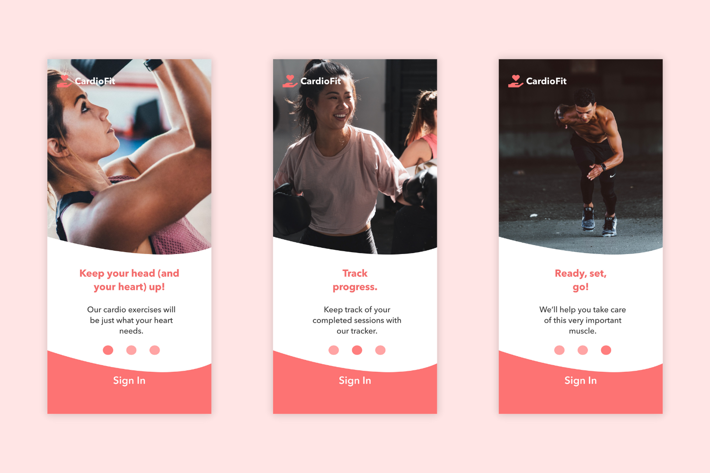
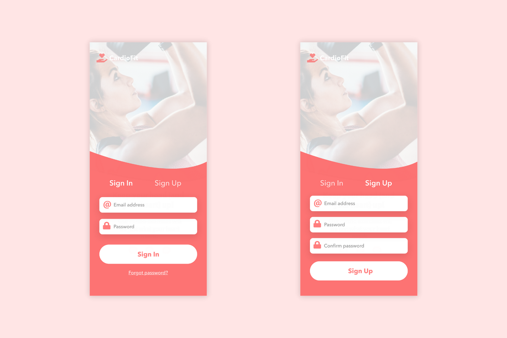
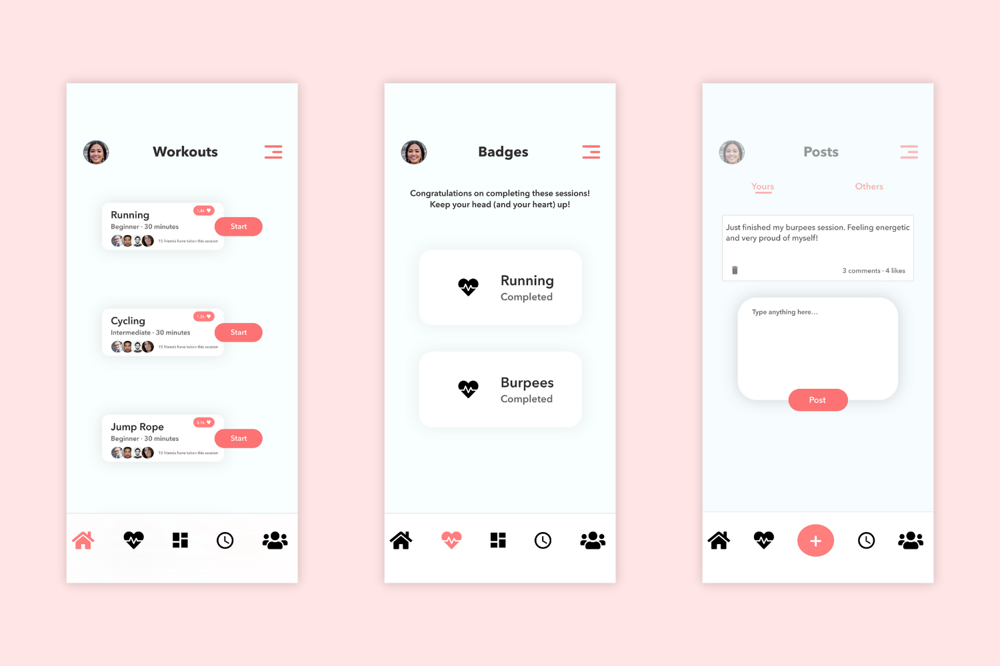
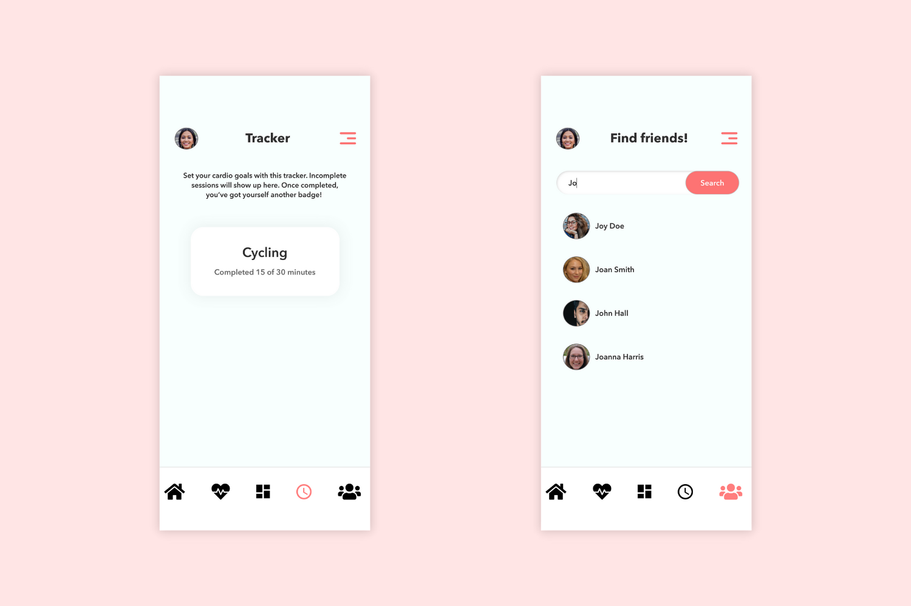

CardioFit focuses on cardio exercises. I felt that since there are many fitness apps that are geared towards general exercise, it would be awesome to design an app for the most important muscle in the body.
The first stage of the app is the onboarding experience. The user can easily sign in, or sign up.
The home screen is where various cardio exercises, or sessions, are displayed. Here users can start their heart fitness journeys.
In the 'Badges' page is where users can see their completed sessions which earned them a badge. Badges come in the shape of a heart.
Not only does CardioFit serve as a fitness app, but it also incorporates user interactions, thus having a social media feel to it. The post button allows the user to post fitness updates, advice, ETC.
On the 'Tracker' page is where users can track their progress.
If a user wants to find people they know, or simply look for more friends to follow, then the last page is where they would go.
I designed CardioFit to be simple, yet still aesthetically pleasing. It would be very easy for users to navigate, and that is definitely crucial when making an app with a clear goal in mind, to improve people's lives.